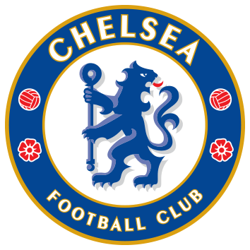

Historia del Chelsea
11/11/2022
Historia
Fundado en 1905, el Chelsea rápidamente ganó gran reputación por la firma de jugadores de renombre y por atraer una gran multitud de seguidores, pero no logró ganar ningún trofeo importante en sus primeros 50 años de existencia. El club disputó 30 de sus primeras 40 temporadas en la First Division, aunque a menudo se encontraba finalizando la temporada en posiciones de media tabla o luchando contra el descenso. Lo más cerca que estuvo el Chelsea de obtener un trofeo importante en aquellos años fue cuando se proclamó subcampeón de la FA Cup en 1915, aunque en los años 1911, 1920, 1932, 1950 y 1952 fue eliminado en las semifinales. La mala racha fue rota finalmente por el entrenador Ted Drake, quien presentó una serie de cambios en el club y llevó al Chelsea a su primer campeonato de liga en 1955. Entre 1963 y 1972, el Chelsea competía regularmente por consagrarse campeón de algún torneo importante, aunque frecuentemente estuvo a punto de fracasar. Ganó la Football League Cup en 1965, la FA Cup en 1970 y la Recopa de Europa en 1971, además de haber sido subcampeón de la FA Cup en 1967 y subcampeón de la Football League Cup en 1972. Surgieron varios problemas durante la siguiente década, en particular causados por un intento ambicioso de modernizar el Stamford Bridge, el estadio del Chelsea. Esto puso al club al borde de la extinción antes de que el entrenador John Neal le diera al Chelsea el campeonato de la Second Division a mediados de los años 80 y, en última instancia, lograrlo establecer en la máxima categoría. Un renacimiento del club se dio entre 1996 y 2000, cuando Ruud Gullit y Gianluca Vialli arribaron al Chelsea. Gracias a ellos, el Chelsea logró ganar la FA Cup en 1997 y en el 2000, así como la Football League Cup y la Recopa de Europa en 1998 y la clasificación a la Liga de Campeones de la UEFA por primera vez. Desde entonces, el club ha finalizado entre los seis primeros lugares de la Premier League desde la temporada 1996-97. En 2003, el Chelsea fue comprado por el multimillonario ruso Román Abramóvich, quien inició el camino del club hacia el éxito; José Mourinho obtuvo un bicampeonato en las temporadas 2004-05 y 2005-06, una FA Cup y dos Football League Cups en 3 años. El club también logró alcanzar una final de Liga de Campeones en el 2008 bajo la dirección de Avram Grant y consiguió otra FA Cup en el 2009 gracias a Guus Hiddink, además de haber conseguido su sexta FA Cup y su tercer título de liga en la temporada 2009-10 bajo el mandato de Carlo Ancelotti.
Investigacion:
El último golpe para Abramovich, quien fue sancionado en marzo por el Reino Unido y la Unión Europea, se produjo el mes pasado cuando MHC (Services) Ltd., que operaba como parte de su oficina familiar antes del conflicto, solicitó la liquidación. Sus principales activos en Londres valían unos 4 mil millones de libras antes de la invasión, casi un tercio de su fortuna total en ese momento, según el índice de multimillonarios de Bloomberg. Los movimientos destacan la rapidez con que algunas de las mayores fortunas de Rusia se hundieron como resultado de las sanciones financieras impuestas en todo el mundo cuando Vladimir Putin atacó al vecino de su país. “Ya no está en la cima de su juego”, dijo David Lingelbach , quien dirigió las operaciones rusas de Bank of America Corp. en la década de 1990 y ahora enseña en la Universidad de Baltimore. “Me parece que está a la defensiva”. Abramovich, de 55 años, que ha tratado de negociar la paz entre Rusia y Ucrania y está luchando contra las sanciones de la UE, fue uno de los oligarcas rusos de más alto perfil que invirtió miles de millones en la economía de Londres tras el colapso de la Unión Soviética. Compró el Chelsea Football Club en 2003 por 140 millones de euros y proporcionó más de mil millones en financiamiento antes de venderlo en mayo en un acuerdo examinado por el gobierno del Reino Unido, y algunos de los fondos se destinaron a apoyar los esfuerzos de ayuda en Ucrania. El nuevo grupo propietario, encabezado por Todd Boehly, acordó pagar 2 mil 500 millones de libras esterlinas y prometió otros 1750 millones de libras esterlinas en inversiones adicionales en el club.
 Meme
Meme Imagenes
Imagenes
 video checlsea
video checlsea Links para el chelsea
Links para el chelsea